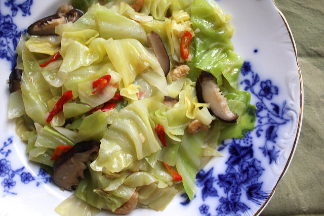
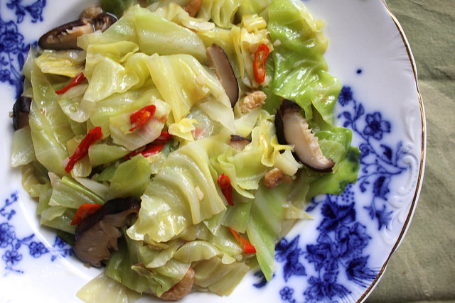

Chinese flat cabbage is round, relatively flat like a plate, with a stronger flavour and slightly tougher texture than Chinese white cabbage.
Choose smaller cabbages with lots of young leaves clustered at the centre. Chinese flat cabbage suits quick moist cooking methods. The young centre leaves can be used raw in a salad. Miniature tat soi is regularly found in mesclun salad mixes.
(source: https://www.vegetables.co.nz/vegetables-a-z/asian-greens)
click on image to go
 
